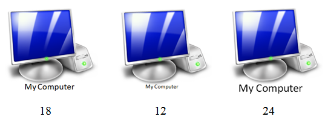
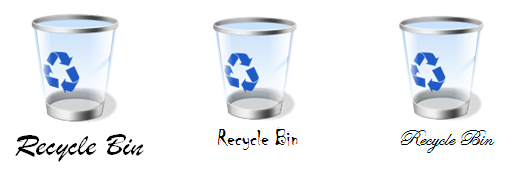

Shakshat Virtual Lab 
INDIAN INSTITUTE OF TECHNOLOGY GUWAHATI
After performing this experiment
Size of icon in context of screen size determines its visual impact. Based on this size pixilation should be determined. An icon at 64x64 may be better recognized and associated with by the user, than at 24x24. When 64x64 is sufficient there is not much gain to design a 128x128 icon.
An icon needs to be simple & yet represent what it is supposed to.
Icons generally mimic real world objects.
A new icon added to existing set must fit with other icons on the screen in terms of belongingness. Icons within same screen should look as a family. Technically all icons belonging to same screen should have same styling features (shape, size, color etc).
Unnecessary shades and shadows need to be avoided. This helps make the icon neat and trimmed aesthetically as well as functionally. Such an icon can be refreshed at a faster rate on the screen. Layers of rendering make the icon pixel-heavy requiring anti-aliasing to be performed compulsorily.
A good icon is self defining. It does not need word labels. For novice, first time users and users with memory difficulties it is normal for icons to have a label. The letters / alphabets used to make the labels need to be simple, non fancy and readable. The norms governing letter shape and style are practiced under the design specialization known as “Typography”.
Each style of alphabet is called by its name. Single alphabet or numeral is referred to as ‘font’. Fonts have sizes measured in ‘points’. Thus we have 6, 8, 10,12, 14,24 etc as font sizes. Thus is shown in figure below.
Figure below shows some fancy fonts that probably are not suitable for labeling under icons as at smaller font size they become unreadable.

Icons should use minimum set of lines, colors etc. that are sufficient enough to recognize the real world object which the icon represents. (Refer figure above). Over designed graphically rich icons, though a matter of artistic satisfaction to the creator can unfortunate land up as sadistic frustration for the user. So simplicity is the rule and not an exception.

